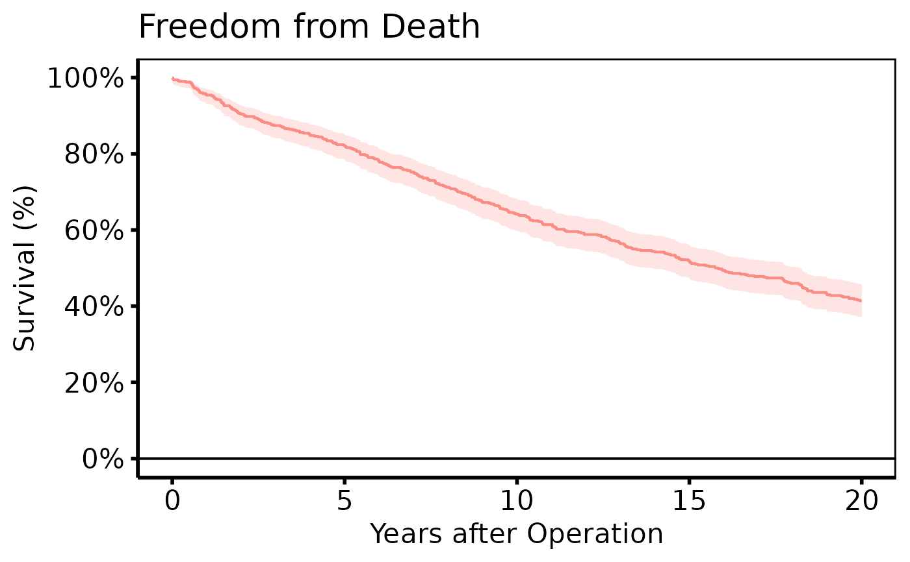
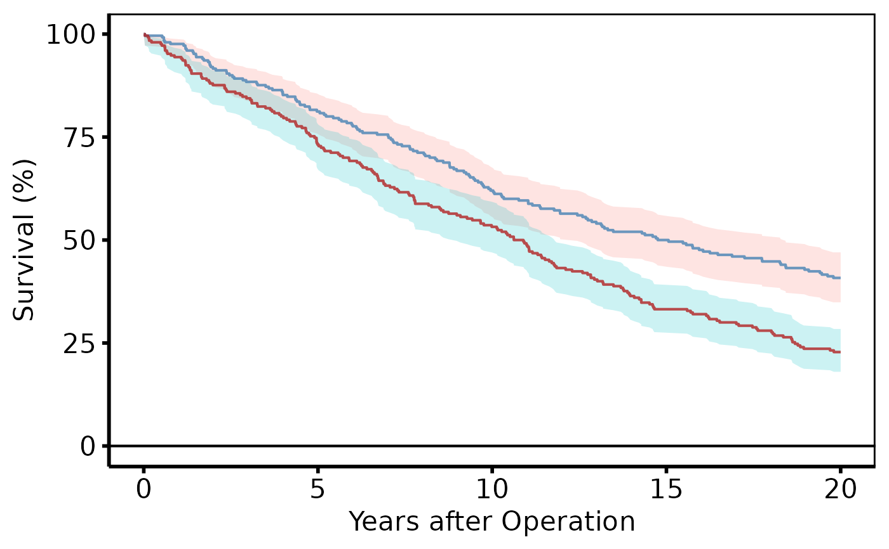
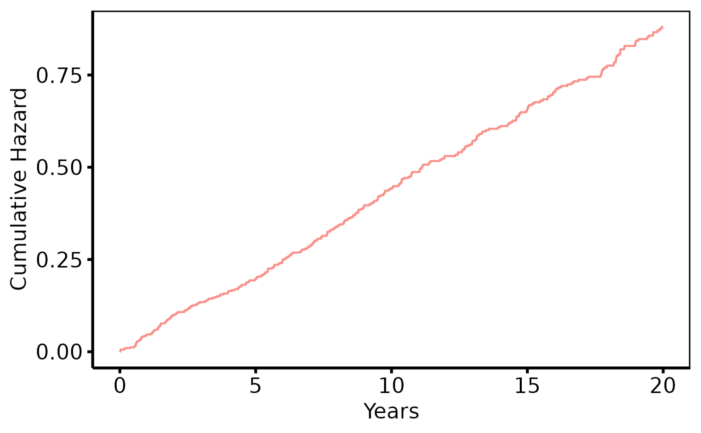
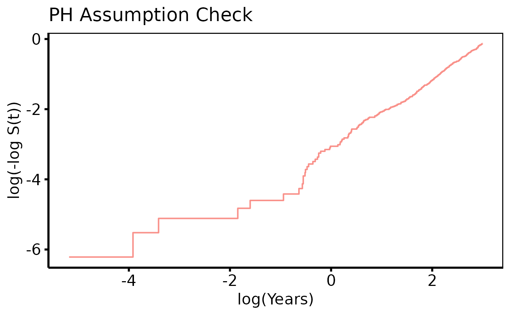

Fits a Kaplan-Meier (product-limit) or Nelson-Aalen (Fleming-Harrington)
survival model to patient-level data and returns an hv_survival
object containing the tidy model output and accessory tables. No plot is
built at this stage; call plot.hv_survival on the result to
obtain a bare ggplot2 object that you can decorate with scales,
labels, and theme_hv_manuscript.
Arguments
- data
A data frame with one row per patient.
- time_col
Name of the numeric column holding follow-up time (in years). Default
"iv_dead".- event_col
Name of the 0/1 or logical event-indicator column. Default
"dead".- group_col
Optional name of a character or factor column used to stratify the analysis.
NULL(default) produces an unstratified estimate labelled"All".- method
Estimator:
"kaplan-meier"(default, logit CI — mirrors SAS%kaplan) or"nelson-aalen"(Fleming-Harrington cumulative hazard with log CI — mirrors SAS%nelsont, preferred when \(S(t)\) approaches zero).- conf_level
Confidence level for the CI band. Default
0.95.- report_times
Numeric vector of time points at which survival estimates and numbers-at-risk are tabulated. Default
c(1, 5, 10, 15, 20, 25).
Value
An object of class c("hv_survival", "hv_data") (a list);
call plot() on the result to render the figure — see
plot.hv_survival. The list has three elements:
$dataTidy data frame with one row per (time, strata) pair. Columns:
time,surv,lower,upper,n.risk,n.event,n.censor,cumhaz,strata,hazard,density,mid_time,life,proplife,log_cumhaz,log_time.$metaNamed list:
time_col,event_col,group_col,method,conf_level,report_times,n_obs,n_events.$tablesNamed list with two data frames:
risk(strata,report_time,n.risk) andreport(strata,report_time,surv,lower,upper,n.risk,n.event).
See also
plot.hv_survival to render as a ggplot2 figure,
theme_hv_manuscript for the publication theme,
sample_survival_data for example data.
Other Kaplan-Meier survival:
plot.hv_survival()
Examples
dta <- sample_survival_data(n = 500, seed = 42)
# 1. Build data object
km <- hv_survival(dta)
km # print method shows key metadata
#> <hv_survival>
#> Method : kaplan-meier
#> Time col : iv_dead
#> Event col : dead
#> N obs : 500 (events: 293, 58.6%)
#> Conf level : 95%
#> Report times: 1, 5, 10, 15, 20, 25
#> $data : 295 rows × 16 cols
#> $tables : risk, report
km$tables$report # survival estimates at report_times
#> strata report_time surv lower upper n.risk n.event
#> 1 All 1 0.954 0.9317320 0.9692443 478 1
#> 2 All 5 0.822 0.7859710 0.8530976 412 1
#> 3 All 10 0.642 0.5989814 0.6828473 322 1
#> 4 All 15 0.518 0.4741762 0.5615486 260 1
#> 5 All 20 0.414 0.3715880 0.4577269 207 0
#> 6 All 25 0.414 0.3715880 0.4577269 207 0
km$tables$risk # numbers at risk
#> strata report_time n.risk
#> 1 All 1 478
#> 2 All 5 412
#> 3 All 10 322
#> 4 All 15 260
#> 5 All 20 207
#> 6 All 25 207
# 2. Bare plot -- undecorated ggplot returned by plot.hv_survival
p <- plot(km)
# 3. Decorate: axis scales, labels, theme
p +
ggplot2::scale_y_continuous(breaks = seq(0, 100, 20),
labels = function(x) paste0(x, "%")) +
ggplot2::scale_x_continuous(breaks = seq(0, 20, 5)) +
ggplot2::coord_cartesian(xlim = c(0, 20), ylim = c(0, 100)) +
ggplot2::labs(x = "Years after Operation", y = "Survival (%)",
title = "Freedom from Death") +
theme_hv_poster()
#> Scale for y is already present.
#> Adding another scale for y, which will replace the existing scale.

# Stratified: colour scale adds clinical meaning
dta_s <- sample_survival_data(
n = 500, strata_levels = c("Type A", "Type B"),
hazard_ratios = c(1, 1.4), seed = 42
)
km_s <- hv_survival(dta_s, group_col = "valve_type")
plot(km_s) +
ggplot2::scale_color_manual(
values = c("Type A" = "steelblue", "Type B" = "firebrick"),
name = "Valve Type"
) +
ggplot2::labs(x = "Years after Operation", y = "Survival (%)") +
theme_hv_poster()

# Other plot types
plot(km, type = "cumhaz") +
ggplot2::labs(x = "Years", y = "Cumulative Hazard") +
theme_hv_ppt_dark()

plot(km, type = "loglog") +
ggplot2::labs(x = "log(Years)", y = "log(-log S(t))",
title = "PH Assumption Check") +
theme_hv_ppt_dark()

# --- Global theme + RColorBrewer (set once per session) ------------------
if (FALSE) { # \dontrun{
old <- ggplot2::theme_set(theme_hv_manuscript())
plot(km_s) +
ggplot2::scale_colour_brewer(palette = "Set1", name = "Valve Type") +
ggplot2::labs(x = "Years after Operation", y = "Survival (%)")
ggplot2::theme_set(old)
} # }
# See vignette("plot-decorators", package = "hvtiPlotR") for theming,
# colour scales, annotation labels, and saving plots.